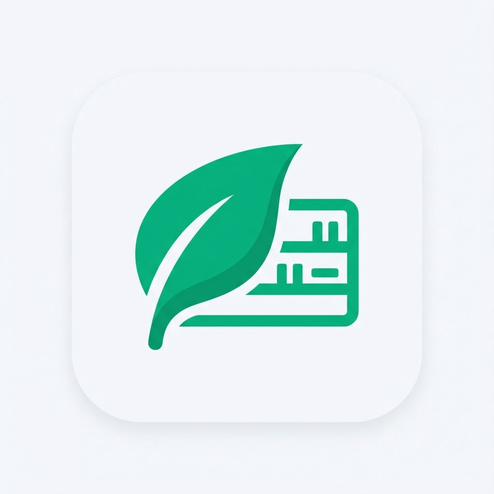

FreshCheck Privacy Policy
Last updated: 5 October 2026
English
FreshCheck is developed by Pierfrancesco Amendola. The app is built to work entirely on your device. We run no servers, we have no user accounts, and we do not collect, sell or share personal data.
Data stored on your device
Your items, expiry dates, prices, storage places, shopping list, statistics and settings are saved only in the app's local storage on your phone. We cannot access them. Deleting the app deletes all of this data. You can export a CSV file or a backup at any time from Settings.
Camera
The camera is used only to scan barcodes and to read printed expiry dates. Images are processed on the device, using Apple and Google on-device text recognition, and are discarded immediately. No photo is saved or uploaded.
Notifications
Expiry reminders, the morning digest and the weekly plan are scheduled locally on your device. No push server is involved.
Product lookup (Open Food Facts)
When you scan a barcode, only the barcode number and your app language are sent to the free public database Open Food Facts to find the product name. No personal information is included. Open Food Facts' own privacy policy applies to that request. If you type the product name yourself, nothing is sent.
Purchases (Apple, Google and RevenueCat)
FreshCheck Pro purchases and subscriptions are processed by Apple (App Store) or Google (Google Play). We never see your payment details. To check whether Pro is active, the app uses RevenueCat, which receives an anonymous, randomly generated app user ID and your purchase receipts. This information is not linked to your identity and is not used for tracking or advertising. See the RevenueCat privacy policy.
Tracking, analytics and advertising
FreshCheck contains no advertising, no analytics SDK and no tracking across apps or websites.
Children
FreshCheck does not knowingly collect any data from anyone, including children.
Changes and contact
If this policy changes, the new version will be published on this page with a new date. For any question, write to checcofran717@gmail.com.
Italiano
FreshCheck è sviluppata da Pierfrancesco Amendola. L'app funziona interamente sul tuo dispositivo. Non abbiamo server né account utente e non raccogliamo, vendiamo o condividiamo dati personali.
Dati salvati sul dispositivo
Prodotti, scadenze, prezzi, luoghi di conservazione, lista della spesa, statistiche e impostazioni sono salvati solo nella memoria locale dell'app sul tuo telefono. Noi non possiamo accedervi. Eliminando l'app elimini tutti questi dati. Puoi esportare un file CSV o un backup in qualsiasi momento dalle Impostazioni.
Fotocamera
La fotocamera serve solo a scansionare i codici a barre e a leggere le date di scadenza stampate. Le immagini sono elaborate sul dispositivo, con il riconoscimento del testo on-device di Apple e Google, e vengono scartate subito. Nessuna foto viene salvata o caricata.
Notifiche
Promemoria di scadenza, riepilogo mattutino e piano settimanale sono programmati localmente sul dispositivo. Non viene usato alcun server di notifiche.
Ricerca prodotti (Open Food Facts)
Quando scansioni un codice a barre, solo il numero del codice e la lingua dell'app vengono inviati al database pubblico e gratuito Open Food Facts per trovare il nome del prodotto. Non viene inclusa alcuna informazione personale. A quella richiesta si applica l'informativa di Open Food Facts. Se scrivi il nome a mano, non viene inviato nulla.
Acquisti (Apple, Google e RevenueCat)
Acquisti e abbonamenti FreshCheck Pro sono gestiti da Apple (App Store) o Google (Google Play). Non vediamo mai i tuoi dati di pagamento. Per verificare se Pro è attivo, l'app usa RevenueCat, che riceve un ID utente anonimo generato a caso e le ricevute d'acquisto. Queste informazioni non sono collegate alla tua identità e non sono usate per tracciamento o pubblicità. Vedi l'informativa di RevenueCat.
Tracciamento, analisi e pubblicità
FreshCheck non contiene pubblicità, SDK di analisi né tracciamento tra app o siti web.
Minori
FreshCheck non raccoglie consapevolmente dati di nessuno, minori compresi.
Modifiche e contatti
Se questa informativa cambia, la nuova versione sarà pubblicata su questa pagina con una nuova data. Per qualsiasi domanda scrivi a checcofran717@gmail.com.